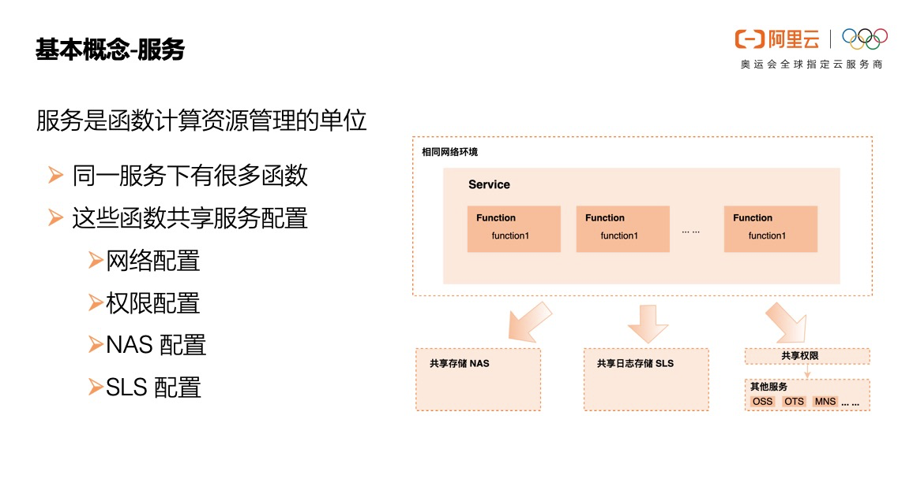
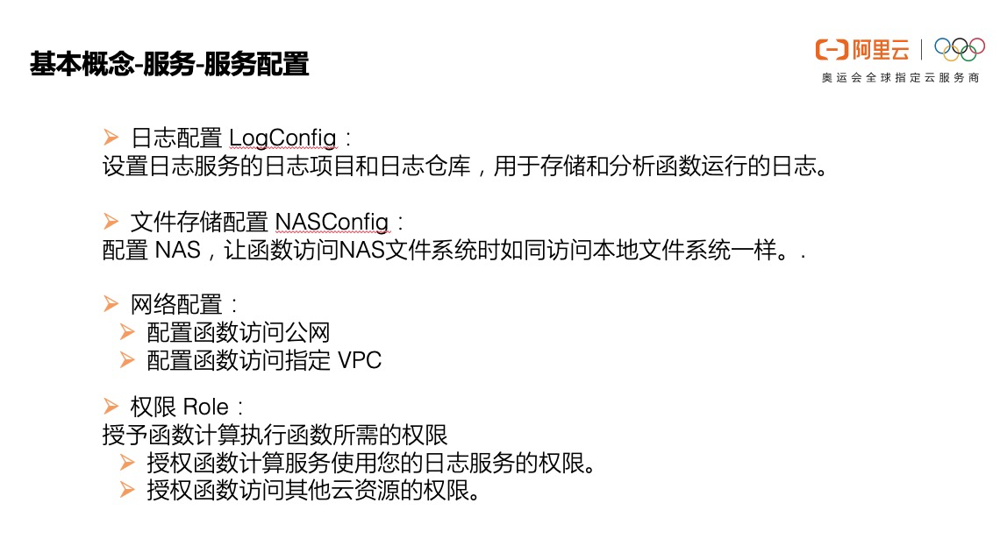
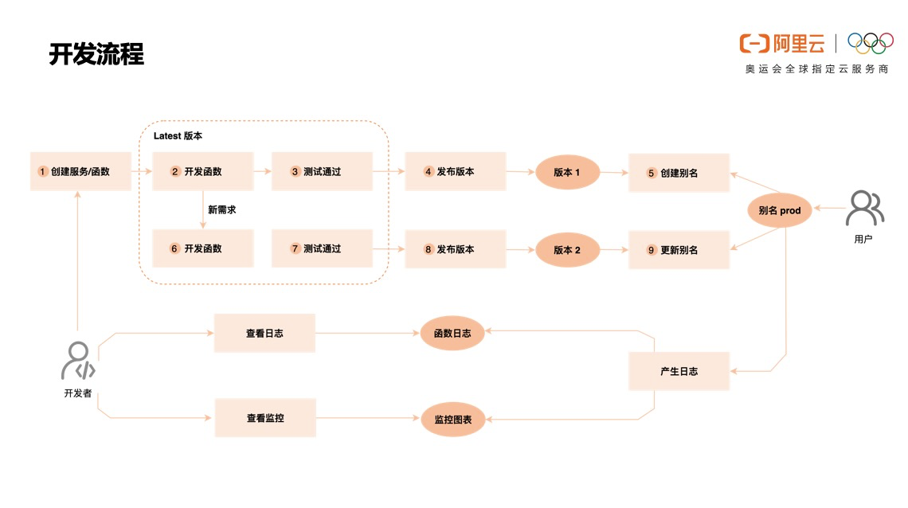

- 01 架构的演进.md.html
- 02 Serverless 的价值.md.html
- 03 常见 Serverless 架构模式.md.html
- 04 Serverless 技术选型.md.html
- 05 函数计算简介.md.html
- 06 函数计算是如何工作的？.md.html
- 07 函数粘合云服务提供端到端解决方案.md.html
- 08 函数计算的开发与配置.md.html
- 09 函数的调试与部署.md.html
- 10 自动化 CI&CD 与灰度发布.md.html
- 11 函数计算的可观测性.md.html
- 12 典型案例 1：函数计算在音视频场景实践.md.html
- 13 典型案例 3：十分钟搭建弹性可扩展的 Web API.md.html
- 14 Serverless Kubernetes 容器服务介绍.md.html
- 15 Serverless Kubernetes 应用部署及扩缩容.md.html
- 16 使用 Spot 低成本运行 Job 任务.md.html
- 17 低成本运行 Spark 数据计算.md.html
- 18 GPU 机器学习开箱即用.md.html
- 19 基于 Knative 低成本部署在线应用，灵活自动伸缩.md.html
- 20 快速构建 JenkinsGitlab 持续集成环境.md.html
- 21 在线应用的 Serverless 实践.md.html
- 22 通过 IDEMaven 部署 Serverless 应用实践.md.html
- 23 企业级 CICD 工具部署 Serverless 应用的落地实践.md.html
- 24 Serverless 应用如何管理日志&持久化数据.md.html
- 25 Serverless 应用引擎产品的流量负载均衡和路由策略配置实践.md.html
- 26 Spring CloudDubbo 应用无缝迁移到 Serverless 架构.md.html
- 27 SAE 应用分批发布与无损下线的最佳实践.md.html
- 28 如何通过压测工具+ SAE 弹性能力轻松应对大促.md.html
- 29 SAE 极致应用部署效率.md.html
- 捐赠
08 函数计算的开发与配置
导读： 在本篇文章中“基本概念”部分主要对函数计算最核心的概念进行详细介绍，包括服务、函数、触发器、版本、别名以及相关的配置；“开发流程”部分介绍了基于函数计算开发的完整开发部署流程。
基本概念
1. 服务

服务是函数计算资源管理的单位，同一个服务下有很多函数，这些函数共享服务的网络配置、权限配置、存储配置、日志配置。
服务可以对应成一个“应用”，这个应用由很多函数共同组成，这些函数具有相同的访问权限、网络配置，日志也记录到相同的 logstore。这些函数本身的配置可以各不相同，比如同一服务下有的函数内存是3G，有的函数内存是 512M，有些函数用 Python 写，有些函数用 Node.js 写。
当然，如果应用比较复杂，同一个应用也可以对应多个服务，这里没有强绑定关系。
1）服务配置

接下来我们介绍服务的几个核心配置：
日志配置： 开发者的代码在函数计算平台运行，如何查看函数运行产生的日志呢？在Server 化的开发方式中，日志都打到统一的文件中，通过 Logstash/Fluentd 这种日志收集工具收集到 ElasticSearch 中，并通过 Kibana 这种可视化工具查看日志及指标。但是在函数计算中，运行代码的机器由函数计算动态分配，开发者无法自己收集日志，函数计算需要帮助开发者投递日志。日志配置就是起到这个作用，配置 LogConfig 设置日志服务的 Project 和 Logstore，函数计算会将函数运行中产生的日志投递到开发者的 Logstore 里。
但是为了成功投递日志，单单配置 Logtore 还不够，函数计算是没有权限向开发者的 Logstore 投递日志的，需要用户授予函数计算向指定的 Logstore 写数据的权限，有了这个授权后，函数计算就可以名正言顺地向开发者的 Logstore 投递日志了。
文件存储配置： 函数计算中每个函数都是独立的，在不同的执行环境中执行，如果用户有一些公共文件希望多个函数共享怎么办呢？在传统 Server 化的开发方式中，好办，将公共文件放到磁盘就好了，各个都去磁盘的同一位置读取，函数计算中的机器是函数计算动态分配的，开发者无法事先将文件存入磁盘，那怎么办呢？可以挂载 NAS，在服务中挂载 NAS 后，函数就可以像访问本地文件系统一样访问 NAS 上的文件了。
网络配置： 网络配置顾名思义就是设置函数的网络访问能力，主要有两种，一个是函数中是否可以访问公网，这是个布尔型的开关，默认是开启的，如果不需要访问公网可以关闭开关。另一个是函数是否可以访问指定 VPC，VPC 是专有网络，专有网络内的数据比较机密，是不能通过公共互联网访问的。如果需要函数访问 VPC 内的资源，比如函数需要访问 VPC 内的 RDS，那就需要授予函数计算访问指定 VPC 的能力，原理是用户授权赋予弹性网卡 ENI 访问 VPC ，并将此 ENI 插入到 FC 中执行用户函数的机器上，从而使函数可以访问 VPC 内资源。
权限： 函数计算是云原生的架构，与云上许多服务产生交互，阿里云有非常严格的权限限制，函数计算是没有能力访问开发者的其他云资源的，当开发者需要函数计算访问其他云服务的时候就需要显示授予函数计算权限。
权限主要有两个应用场景：一个是授予函数计算访问其他服务的权限，比如刚才提到的授权函数计算访问开发者的日志服务、授权函数计算创建 ENI。另一个是授权函数可以访问开发者的云资源，这个是什么呢？举个例子，函数中需要访问 OSS 获取对象，但是又不想暴露 AK，那怎么办呢？开发者可以配置服务中的 Role 有访问 OSS 的权限，函数执行过程中，函数计算会 assumeRole 生成一个临时 AK ，并将这个 AK 存储到函数的上下文 context.credentials 里，开发者在代码中使用context.credentials.access_key_id/context.credentials.access_key_secret/context.credentials.security_token 去创建 OSS Client 就可以了。
2. 函数
“函数计算”中函数可谓是核心概念，函数是管理、运行的基本单元，一个函数通常由一系列配置与可运行代码包组成。
1）函数配置

函数的配置如上图所示：
- Runtime 是函数运行时的环境类型： 函数计算目前支持 Node.js/Python/Java/C#/PHP 等开发环境，同时也支持 Custom Runtime 自定义运行时；
- Code 是函数代码包： 函数计算的后端是只认代码包的，各个开发工具会自动帮您打包。比如您可以直接在控制台上编写代码，控制台会自动为您打包创建/更新函数，您可以在本地编写/调试函数，通过命令行工具 Funcraft 部署到函数计算，Funcraft 也会帮您打包；
- Handler 是入口函数： 您在代码包中写了好多函数，那函数计算到底从哪里开始执行呢，就从您指定的入口函数开始执行；
- Timeout 是函数超时时间： 如果函数执行超过这个时间，函数会被强制停止执行；
- MemorySize 是为函数分配的执行环境内存： 目前取值范围是 128M~3G，如果函数耗用内存超过分配的内存，会 OOM；
- Initializer 是初始化函数： 有什么用呢？之前我们介绍函数计算执行环境的时候讲到，函数计算会为函数分配执行环境，第一次分配的时候会有冷启动，当前请求执行完成后，函数计算也不会立即释放，如果在一段时间内有新的请求到达会复用这个执行环境。Initializer 中的逻辑会在分配执行环境后执行，且保证同一个执行环境执行且只执行一次，那就可以将一些建立连接、加载依赖等耗时的操作放到 Initializer 函数中执行；
- InitializerTimeout 就是 Initializer 函数的最大运行时间。
3. 触发器
往期课程中介绍了函数计算支持的丰富的事件源类型，在事件驱动的计算模型中，事件源是事件的生产者，函数是事件的处理者，触发器提供了一种集中、统一的方式来管理不同的事件源。当事件发生时，如果满足触发器定义的规则，事件源会自动调用触发器所对应的函数。
典型的使用场景包括对上传至 OSS 中的对象进行处理，比如图像处理、音视频转码、OSS zip 包解压，以及对 SLS 中的日志进行清洗、处理、转存，在指定时间触发函数执行等等。
4. 版本&别名

上文介绍了服务、函数、触发器，开发者就可以基于函数计算将应用搭建起来了，但又有一个新问题：开发者有了新需求需要更新代码，如何保证线上应用不受影响，平滑迭代上线呢？ 为了解决这个问题，函数计算引入了版本和别名。
版本相当于服务的快照，包括服务的配置、服务内的函数代码及函数配置。当您开发和测试完成后，就发布一个版本，版本单调递增，版本发布后，已发布的版本不能更改，您可以继续在 Latest 版本上开发测试，不会影响已发布的版本。调用函数时，只需要指定版本就可以调用指定版本的函数。
那新问题又来了，版本名称是函数计算指定的单调递增的，每次发布版本，都会有一个新的版本，那每次发完版本后，客户端还要改代码执行最新的版本吗？ 为了解决这个问题呢，我们引入了别名，别名就是指向特定服务版本的指针，发布后，只需要将别名指向发布的版本，再次发布后，再切换别名指向最新的版本，客户端只需要指定别名就可以保证调用线上最新的代码。同时别名支持灰度发布的功能，即有 10% 的流量指向最新版本，90% 理论指向老版本。回滚也非常简单，只需要将别名指向之前的版本即可快速完成回滚。
开发流程

如上图所示，开发者首先创建服务，设置日志、权限等配置，然后创建函数，在当前版本（Latest 版本）下编写代码开发函数，测试通过后发布版本，第一次发布的版本为版本 1，创建别名 prod 指向版本 1，就可以对外提供服务了。
客户端调用函数的日志会记录在开发者配置的 Logstore 里，函数计算提供完备的监控图表，应用上线后，开发者可以通过监控图表和日志查看应用的健康状况。
当开发者有新需求时，继续在 Latest 版本更改代码开发函数，测试通过后发布版本，这次发布的版本为版本 2，切换别名流量 10% 到版本 2，即可实现应用的灰度发布，观察一段时间没有问题，就可以切换 100% 的流量到版本 2 了。
© 2019 - 2023 Liangliang Lee. Powered by gin and hexo-theme-book.